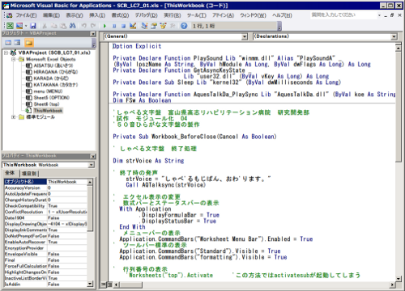

かならずお読みください →

しゃべる文字盤のつくりかた
5 統合開発環境 VBE

プログラミング作業を効率的に進めるため色々手助けしてくれるソフトが統合開発環境です。 開発におけるプロジェクトやバージョンの管理をはじめ、入力時のタイプミス、文法ミスの指摘や入力候補の提示など初心者にも有用な（時にはおせっかいな）機能を備え、プログラミング作業を効率的にすすめるために作られました。
Microsoft Officeをインストールすると自動的にVBAと上図のようなVBA専用の統合開発環境（VisualBasicEditor、VBE）がインストールされます。このように、ほとんどのWindowsパソコンでは、プログラミング用のソフトがもう既にインストールされていますので、準備することも特になくすぐ取り組みを始めることができます。VBEを起動するには、エクセルから、開発>VisualBasicをクリック（またはAlt+F11押下）します。
VBAやVBEの使い方などは多くのサイトで解説されています。 そのようなサイトのひとつ、『よねさんのWordとExcelの小部屋』（http://www.eurus.dti.ne.jp/~yoneyama/）では、 Microsoft OfficeのWord, Excel, PowerPointの基本操作・一般機能の使い方について図表や例題を使って詳細に解説しています。またVBEの基本的な使い方の記事（http://www.eurus.dti.ne.jp/~yoneyama/Excel/vba/vba_vbe.html）もあります。 類似のサイトは他にもあります。『VBE 使い方』といったキーワードで検索するとたくさんHITします。さらに詳しくお知りになりたい方はこのような方法で勉強を進められるとよろしいと思います。
しゃべる文字盤の開発を始めた時に使った、Office2000（Excel2000）には既にVBEが付属していました。もしかしたらそれ以前から付属していたのかもしれませんがよくわかりません。いずれにせよVBEは長く利用され、今ではネット上のあちこちに関係する解説記事が見られるようになりました。
VBEのような統合開発環境はかつてかなり高価で、私を含め多くのアマチュアプログラマにはなかなか手が出せないものでした。ところがVBEの他にも、2005年にマイクロソフトの製品、Visual Studioの機能を限定したExpress版が無料配布されるようになりました。 この頃からパソコン関係の各種の開発ソフトが無料またはごく安価で利用できるようになりました。また参考書の類も多くのサイトの記事でずいぶん補えるようになって来ました。そしてパソコン自体も随分安価になり、機能も向上してきました。
もちろんこれらの多くはパソコン業界のビジネス上の目的をもって進められたものです。しかし、結果としてこのおかげで少ない費用でプログラム作りの勉強ができるようになりました。またソフトウエアの機能が向上した結果、そこそこの技能でそこそこの仕事をさせることができるようになりました。 プロはもちろん、アマチュアにとってこの恩恵は大変大きいものです。
例えば福祉機器のように、需要も用途も限られ、使う人に合わせる必要があり、採算の厳しい『ものづくり』は一般的に継続が容易ではありません。寄付や補助金をあてにできない不景気の時代には厳しさはひとしおです。昔だったらここでお手上げでしたが、今は上記のように従来なかった可能性が提供されています。
福祉機器用具が今のように豊富でなかった時代には、身の回りにある物を工夫して役に立つ道具を手作りしていました。片手が不自由でも爪が切れる爪切り、長い柄のついた背中洗いブラシ、片手で絞れるタオルしぼり、などなど皆さんご存知のとおりです。これらの品々は共通の特徴を持っています。それは、必要とされる限り滅多なことでは消えてなくならないことです。
時代は移り、生活の様子も変わりました。
昔は普通に見られたのに、今ではすっかり珍しくなったものもあります。
反対に昔は身の回りになかったのに、今では簡単に入手できるものもあります。
特にパソコンやスマホなど情報機器やインターネットに関係するもののほとんどがこれに相当します。そしてこれらも含めて身の回りにあるありふれたものを利用して、役に立つものを作り出すことができると、 必要とする人がいるのに経済的にペイしない取り組みが実現するかもしれません。 また景気が悪くなっても、モノは生き残ることができるかもしれません。
問題解決のためにこれまでと違う方法を開発しておく必要を感じます。
まとめ
しゃべる文字盤の発表以来あちこちで、『私も始めた』という方とお会いしました。まったくありがたいことです。 このような新しい取り組みから、患者さんの選択の幅が少しづつ広がることになると思います。なぞなぞです つかってもつかってもなくならないものなあに？ こたえは何でしょう
答えはわからなくてもいいんです。ただ、そんなものをつかって役に立つ道具が作れると、景気や税収や予算に関係なく必要な人に必要なだけモノとチャンスを届けることができる。これをおわかりいただければそれでいいのです。
2014/05/21 公開研究企画課リハ工学科にもどる